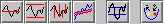
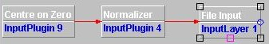
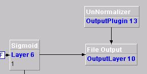

Plugins
Plugins are a set of components that affect how other components
behave.

These are the existing types of plugin:
- Input Plugins
Input plugins can be attached to input components (file input and url
input). They alter the data produced by the input layer.
Input plugins are connected by drawing a connection from the red square
of an input layer to the plugin.
Input plugins can be cascaded.

- Monitor Plugins
Monitor plugins are not attached to other components as they directly
affect the learning phase of the network.
They affect the way that learning changes during the learning phase.
- Output Plugins
Output plugins can be attached to output components (e.g file output
and excel output). They alter the data given to the output layer prior
to being written by the output layer.
Output plugins are connected by drawing a connection from the red
square of an output layer to the plugin.
Output plugins can be cascaded.

Common Input and Output Converter Properties
Both the input and output converter plugins have one common property.
- Advanced Serie Selector
The Advanced Serie Selector is used to specify what columns or
serie to convert. For example if the input or output contained 4 columns
you could specify that columns 1 and 3 be converted.
The selector must be a list of one or a comma delimeted list of
multiple options. The options can be one column '2' or a range of
columns '3-6'. The format for the selector is as follows ...
[col]{,[col]{,[col1-col2]}}
For example if the input source has 5 columns and you would like
column 1 and columns 3,4,5 you could specify the selector as '1,2-5' or
'1,2,3,4,5'.
- Name
The name of the plugin as displayed on the development pane.
Center on Zero
This input plugin centers the data evenly around the zero point. That
is, it subtracts the average of the data from each item.
Normalizer
This input plugin normalizes the data linearly between two bounds.
The extra properties that can be set for normalizer plugins:
- Out Data Max
The upper bound or maximum value of the output or converted data.
- Out Data Min
The lower bound or minimum value of the output or converted data.
- In Data Max
The upper bound or maximum value of the input data.
- In Data Min
The lower bound or minimum value of the input data.
Note :
Setting both "In Data Max" and "In Data Min" to 0 will instruct the
plugin to search for the upper (max) and lower (min) bound of the data.
Turning Points Extractor
This input plugin extracts the turning points of a time series. It
generates a Boolean a signal that detects relative minima and maxima.
The extra property that can be set for turning point extractor plugins:
- minChangePercentage
The amount that the time series must change by to be considered a
real turning point. Setting this to a non-zero value reduces noise
signals.
Moving Average Converter
Changes the specified input serie data so that it becomes a moving
average of itself.
This plugin operates on specified columns or serie of data in a
vertical fashion. The converter calculates the moving average of a
column i.e vertically. The data in the column is converted so that it
becomes a moving average of itself. If you chose a 3 row moving average
then the first 2 rows will be set to 0 and the third and subsequent
rows are set to the 3 row moving average.
For example if the serie to be converted contained the following
data ....
5
15
6
8
and the requested moving average was set at 3 then the serie would
become ..
0
0
8.67
9.67
So the column's rows are set to the sum of the previous two values
and the current value divided by 3.
The extra properties that should be specified by in this converter
are ...
- Moving Average
Specifies what the moving average should be for each column
specified in the Advanced Serie Selector. Note this should be a comma
delimeted list e.g '10,20,50' would specify a moving average of 10 for
the first selected column, a moving average of 20 for the second
selected column and 50 for the third.
Delta Norm Plugin
This plugin is used to calculate the normalized differences between the actual data and past values of a time series.
Used along with the TurningPointExtractor plugin is very useful to build time series signal generators.
Shuffler Plugin
This plugin 'shuffles' the input rows at every epoch, permitting to
train a neural network with a different patterns' input order for each
epoch.
Note:
The Shuffler plugin must be always used in conjunction with the Input Connector component.
Binary Plugin
This plugin converts the input patterns to binary values.
UnNormalizer
This output plugin unnormalizes the data linearly between two bounds.
There are four extra properties that can be set for unnormalizer
plugins:
- Out Data Max
The upper bound or maximum value of the output or converted data.
- Out Data Min
The lower bound or minimum value of the output or converted data.
- In Data Max
The upper bound of the input data.
- In Data Min
The lower bound of the input data.
Note :
Setting both "In Data Max" and "In Data Min" to 0 will instruct the
plugin to search for the upper and lower bound of the data. Typically
if a Sigmoid layer is attached to the output layer then these values
will be 1.0 and 0.0 respectively. For Tanh then these will be 1.0 and
-1.0. For linear it will be Min = bias*(min of previous layer) , Max =
bias*(max of previous layer).
Linear Annealing
This monitor plugin affect the control panel learning rate and momentum
parameters during the learning phase.
Initial and final values for these parameters can be set, and they will
be altered linearly during learning.
This can help to fine tune a network towards the end of its education
instead of embarking on radically different configurations.
There are five properties that can be set for linear annealing plugins:
- LearningRateFinal
The final learning rate value. - MomentumInitial
The initial momentum value. - LearningRateInitial
The initial learning rate value. - Name
The name of the plugin as displayed on the development pane. - MomentumFinal
The final momentum value.
Dynamic Annealing
This monitor plugin affect the control panel learning rate parameter
during the learning phase in much the same way as the linear annealing
plugin.
The difference is that instead of changing the learning rate in a
linear fashion, it reduces it by a percentage only if the error is worse
than the previous round's.
This help to reduce the risk of a good configuration being lost as
learning proceeds.
There are three properties that can be set for dynamic annealing
plugins:
- Name
The name of the plugin as displayed on the development pane. - Rate
The initial learning rate value. - Change %
The rate at which the learning rate is reduced. The value should be
between 0 and 100.